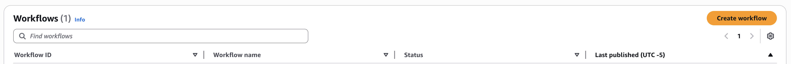
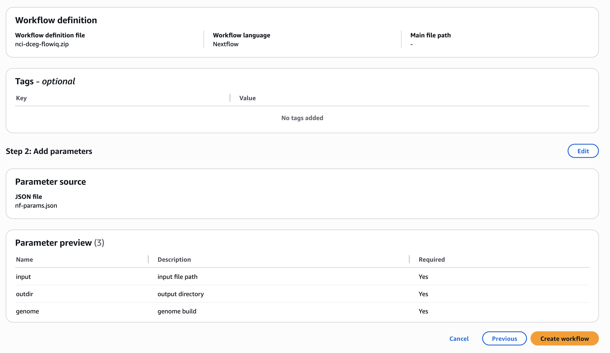
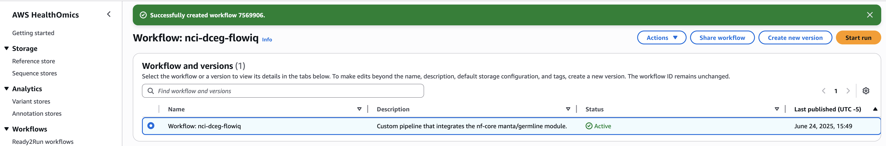
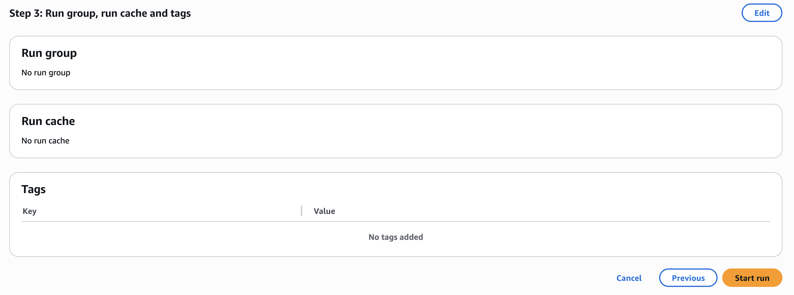
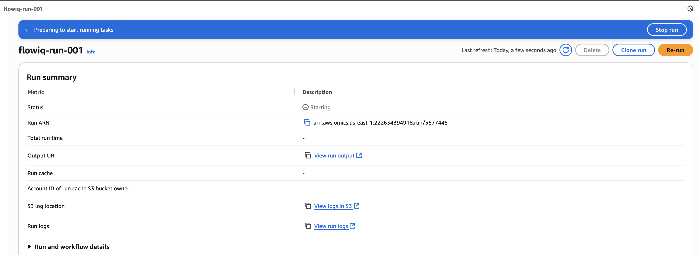
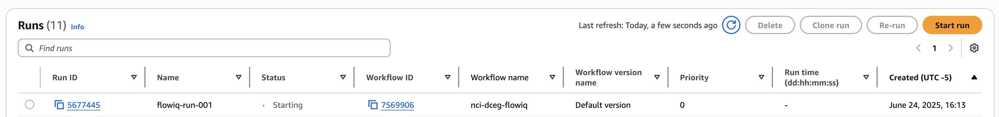

Step 8: Deploy to AWS HealthOmics
This step walks you through how to deploy a workflow to AWS HealthOmics, focusing on setting up your containers, uploading your workflow and parameters, and running it in the cloud.
Start by visiting the AWS HealthOmics landing page:
AWS HealthOmics provides three main services:
- Storage
- Workflows
- Analytics
For our purposes, we’ll focus on Workflows. Select Create workflows under the Bioinformatics workflows section:

On the next screen, the How it works panel outlines the four major steps to create and run a workflow:

üì¶ Container Requirements
A key requirement for using AWS HealthOmics is that all containers used in workflows must be stored in Amazon Elastic Container Registry (ECR) — AWS’s managed Docker image service. Public registries like quay.io or Docker Hub are not supported directly.
In our case, the container required by a module is defined in manta/germline/main.nf:
container "${ workflow.containerEngine == 'singularity' && !task.ext.singularity_pull_docker_container ?
'https://depot.galaxyproject.org/singularity/manta:1.6.0--h9ee0642_1' :
'biocontainers/manta:1.6.0--h9ee0642_1' }"
We also see in nextflow.config:
docker.registry = 'quay.io'
This means we need to pull the image locally from quay.io and push it to a private ECR repository so HealthOmics can access it.
Step 1: Upload the Container to Private ECR
Navigate to Amazon ECR > Private repositories and click Create repository. For the name, use something like biocontainers/manta.

Once created, go to the repository and click View push commands. This provides the full set of docker and awscli commands needed to push your image:
# Authenticate with ECR
$ aws ecr get-login-password --region us-east-1 \
| docker login --username AWS \
--password-stdin 222634394918.dkr.ecr.us-east-1.amazonaws.com
# Pull from quay.io
$ docker pull quay.io/biocontainers/manta:1.6.0--h9ee0642_1
# Tag and push to your private ECR
$ docker tag quay.io/biocontainers/manta:1.6.0--h9ee0642_1 \
222634394918.dkr.ecr.us-east-1.amazonaws.com/biocontainers/manta:1.6.0--h9ee0642_1
$ docker push 222634394918.dkr.ecr.us-east-1.amazonaws.com/biocontainers/manta:1.6.0--h9ee0642_1

Step 2: Prepare Workflow Definition and Parameters
HealthOmics requires:
- A workflow definition (e.g., a Nextflow script)
- A JSON file containing the input parameters
You already have the Nextflow pipeline; now you need to generate the corresponding parameter file.
Use the nf-core CLI to do this:
nf-core pipelines --create-params-file
# or
nf-core pipelines --launch
Both methods generate a nf-params.json file, which you can upload directly to HealthOmics.
Step 3: Create the Workflow
Click Create workflow in the HealthOmics Workflows section:

In the setup wizard, provide:
- A workflow name and description
- The workflow language (e.g., Nextflow)
- Path to the script (local file or S3)
- Your parameter file (
nf-params.json) — recommended to avoid manual errors
You’ll also be asked to define:
- Parameter types (required, optional)
- Descriptions
- Any additional custom parameters

Once configured, click Create workflow. You’ll be returned to the dashboard and can now proceed to run the workflow.

Step 4: Start a Run
You’re now ready to run the workflow! Click Start run and complete the wizard.

One important detail: You must provide a Service Role during this step. This role allows HealthOmics to interact with other AWS resources like S3 buckets. If you don’t have permission to create IAM roles, you’ll need help from an AWS admin.
See: Service roles for AWS HealthOmics

üìä Job Monitoring
After launching a run, HealthOmics provides tools to monitor job status, review logs, and inspect output artifacts directly through the dashboard.

üõ†Ô∏è Automation Tip
All of these steps — uploading containers, defining workflows, starting runs — can be automated using the AWS CLI or SDKs. This is useful for CI/CD or scaling to many analyses.